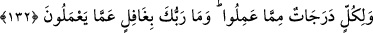
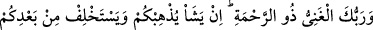
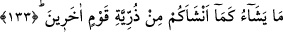

olanlar, olmayanlara tebliğ etmişler ve bu günümüze kadar gelmiştir. Kulaklar hakkı
dinlemekle dolmuştur. Ne bir sultan, ne bir vezir, ne de onlardan başka üstün ve bayağı
kimseler için kendilerini Sultanlar Sultanı’nın kahrından ve helaktan kurtaracak hiç bir
mazeret kalmamıştır. Memleketlerin ve ahalisinin helâk edilmesi ve her türlü zulümlerin
ortaya çıkması, ancak insanın gafleti sebebiyledir. Melik ve Mennân olan Allah onu
gafletten uyandırsın. Şu halde nefsine bir belâ isabet ettiğinde başkasını değil, serkeş
nefsini ayıpla. Bir aşağılamaya uğratıldığında, onun sebebini ancak kendi tabîatında ara!
Artık burhanlar, Allah’ın apaçık delilleri ortadadır. Sağlam dayanak peşinde olanlar
için, muhkem deliller vardır. Allah Teâlâ’nın şu kelâmını işitmedin mi:? “De ki: Üstün
delil Allah’ındır.” (el-Enâm, 6/149)
Görüyorum ki sen sus pus oldun ve sana ne olduğunu bilmiyorsun. Bilakis yorulmaya
devam ediyor, öfkenin peşinde koşuyorsun. Ey hasta, kabre girmeden önce kendini
tedavi et.
132. Herkesin yaptıkları işlere göre dereceleri vardır. Rabbin onların
yaptıklarından habersiz değildir.
İnsan ve cinlerin mükellef olanlarından ister mü’min olsun ister kafir olsun “her
birinin yaptıkları amellere göre dereceleri vardır.” Sâlih olsun kötü olsun amelleri
derece derecedir. Hayır ehli için cennette dereceler vardır. Bu derecelerin bazısı
bazısından üstündür. Müşrikler için de cehennemde derekeler (aşağı doğru inen
basamaklar) vardır. Bazılarının azabı diğerlerine göre daha şiddetlidir. “Dereceler”,
kelimesi mertebeler olarak tefsir edilmiştir. Çünkü bu kelime genellikle hayır ve sevap
hakkında kullanılır. Kâfirlerin ise bir sevabı yoktur.
“Rabb’in onların yaptıklarından habersiz değildir”. İnsanların ibadet ve tâatleri de,
işledikleri günahlar da O’na gizli kalmaz. Bu ifade ile kastedilen şudur: Hayır olsun, şer
olsun, Allah her amelin karşılığını verecektir.
133. Rabbin zengindir, rahmet sahibidir. Dilerse sizi yok eder ve sizi başka bir
kavmin zürriyetinden yarattığı gibi sizden sonra yerinize dilediği bir kavmi yaratır.
“Rabb’in zengindir” kullarından ve ibadetten müstağnidir. (el-Ganiy) “zengin”,
hiçbir şeye muhtaç olmayan ve kendisi için her şeyin varlığı ile yokluğu eşit olandır.
Allah Teâlâ’dan başkası, sadece Allah Teâlâ’ya ihtiyâcı kaldığı zaman “zengin” diye